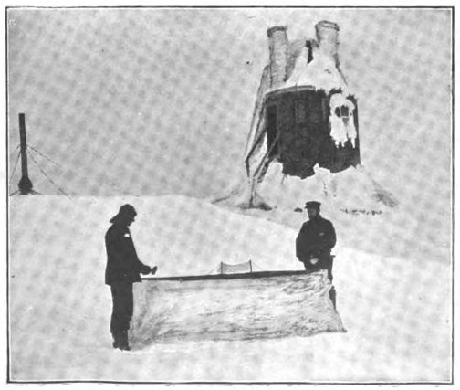

Sunday, October the 23rd, 2011
back to: title, date or indexes
Here is possibly the finest ping-pong photograph ever snapped:

For further details, see the always intriguing Futility Closet (essential daily reading at Haemoglobin Towers).
Boris Johnson famously calls ping-pong whiff-whaff, but in its early days it was known on these shores as Gossima.